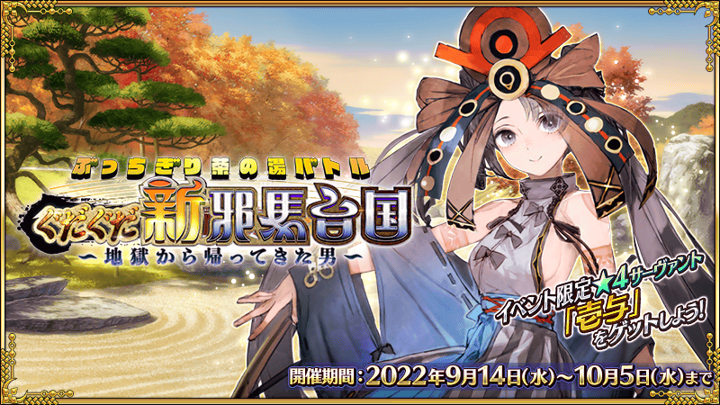
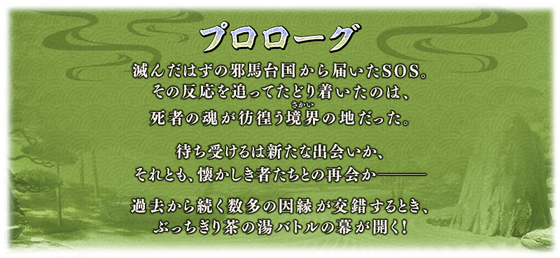
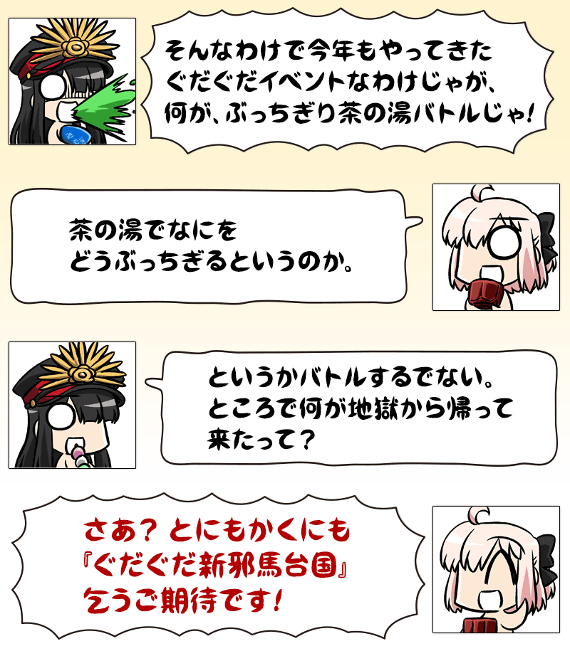
【9月21日(三) 17:00更新】
【公告的主要追記・更新履歴】 ■電視廣告『「一面倒的茶道戰鬥 嘮嘮叨叨新邪馬臺國 從地獄歸來的男人」告知廣告 Web ver.(壹與旁白)』追加 (9/21追記) NEW ■高難易度挑戰關卡追加！(9/21追記) NEW ■沖田總司〔Alter〕(Alterego)的簡易靈衣開放權追加！(9/21追記) NEW ■簡易靈衣「淺蔥色羽織袴」開放權通過「終局特異點」後交換免費化！(9/17追記) ■2位從者的強化關卡追加！(9/17追記)
期間限定活動「一面倒的茶道戰鬥 嘮嘮叨叨新邪馬臺國 從地獄歸來的男人」開幕！
迦勒底一行在謎之SOS導引下造訪的是，死者之魂徘徊的新邪馬臺國。
御主們為了拯救被囚禁的靈魂，目標是在遙遠彼方的幻境「儀來河內」！
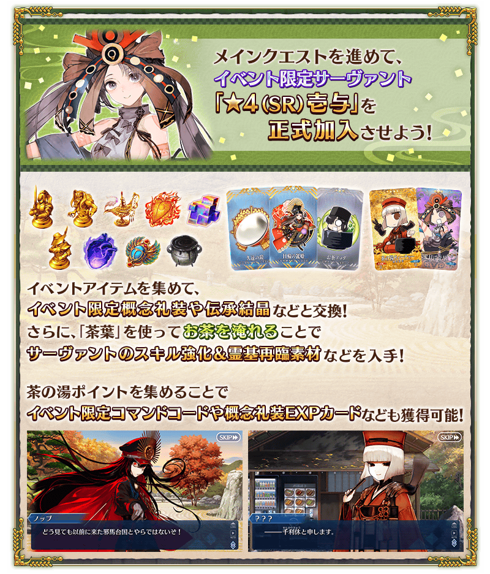
◆活動舉辦期間◆
2022年9月14日(三) 19:00～10月5日(三) 11:59
◆活動參加條件◆
・通過第2部 第4章「Lostbelt No.4 創世滅亡輪廻 由伽・剎多羅 黑色最終之神」
※不需要通過亞種特異點(從Ⅰ到Ⅳ)。
※本頁面皆為開發中圖片。會有與實際圖片相異的情況。 ※本活動的主線關卡與自由關卡會逐日開放。
一面倒的茶道戰鬥 嘮嘮叨叨新邪馬臺國 從地獄歸來的男人廣告公開中！
【9月21日(三) 17:00更新】
在官方網站內首頁及Gallery「Fate/Grand Order」，公開了期間限定活動「一面倒的茶道戰鬥 嘮嘮叨叨新邪馬臺國 從地獄歸來的男人」的電視廣告。
敬請確認。
【「一面倒的茶道戰鬥 嘮嘮叨叨新邪馬臺國 從地獄歸來的男人」告知廣告 Web ver.(壹與旁白)】
【「一面倒的茶道戰鬥 嘮嘮叨叨新邪馬臺國 從地獄歸來的男人」告知廣告 Web ver.(千利休旁白)】
動畫製作：CloverWorks
活動的遊玩方式
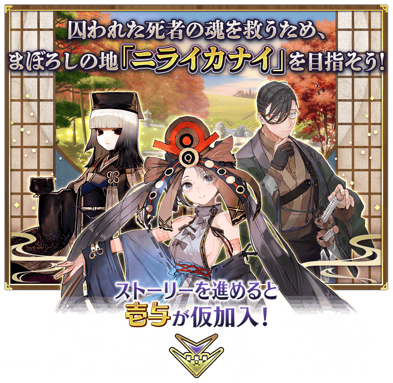
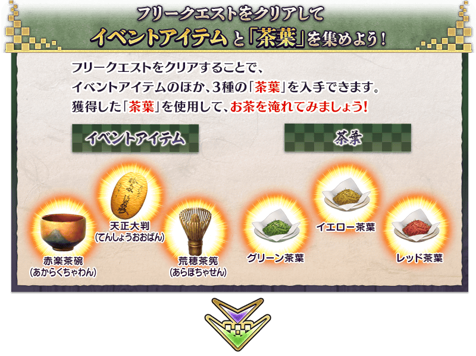
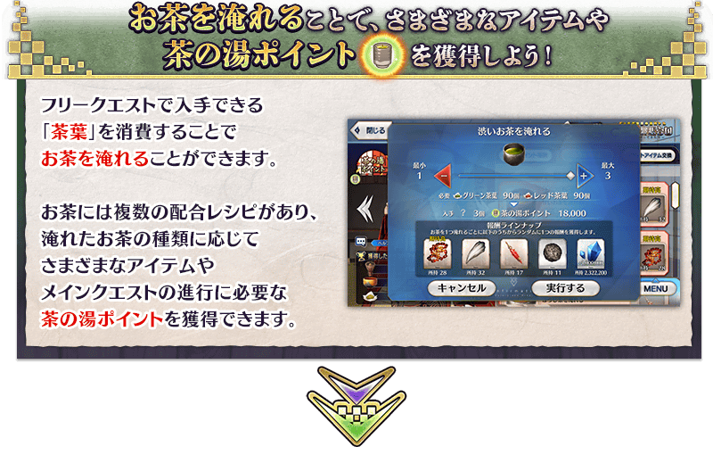
 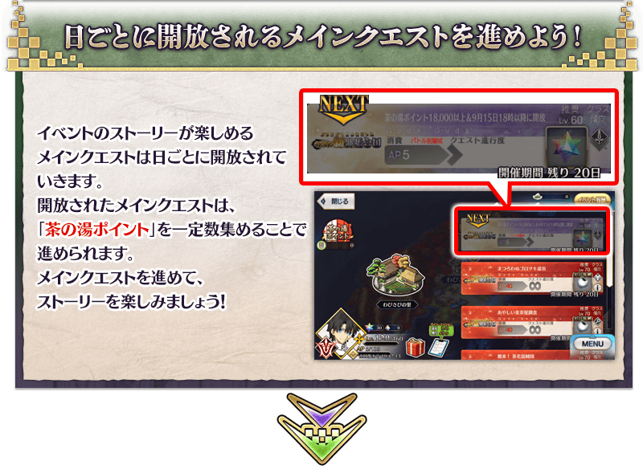
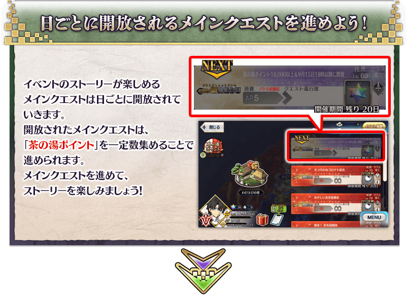
享受故事的主線關卡將逐日開放。
推進主線關卡的話，活動限定從者「★4(SR)壹與」會正式加入。
另外，通過關聯的主線關卡後，會開放收集活動道具的自由關卡。 ※想推進每天的主線關卡，對應關卡的進行需要一定數以上的茶道點數。
【關卡的舉辦期間】
| 關卡的種類 | 舉辦期間 | 開放關卡必須的活動點數 |
|---|---|---|
|
序幕(プロローグ) 主線關卡第一服 自由關卡 |
2022年9月14日(三) 19:00～ 10月5日(三) 11:59 |
― |
|
主線關卡第二服～ 第三服 自由關卡 |
2022年9月15日(四) 17:00～ 10月5日(三) 11:59 |
・主線關卡第二服 18,000點數 |
|
主線關卡第四服～ 第五服 自由關卡 |
2022年9月16日(五) 17:00～ 10月5日(三) 11:59 |
・主線關卡第四服 60,000點數 |
|
主線關卡第六服 自由關卡 |
2022年9月17日(六) 17:00～ 10月5日(三) 11:59 |
・主線關卡第六服 120,000點數 |
|
主線關卡第七服 自由關卡 |
2022年9月18日(日) 17:00～ 10月5日(三) 11:59 |
・主線關卡第七服 190,000點數 |
|
主線關卡第八服 自由關卡 |
2022年9月19日(一) 17:00～ 10月5日(三) 11:59 |
・主線關卡第八服 260,000點數 |
|
主線關卡第九服～ 第十服 自由關卡 |
壹與正式加入
2022年9月20日(二) 17:00～
10月5日(三) 11:59 |
・主線關卡第九服 340,000點數 |
|
主線關卡閒話 追加關卡 自由關卡 |
2022年9月21日(三) 17:00～ 10月5日(三) 11:59 |
・追加關卡 420,000點數 |
※通過主線關卡後會開放自由關卡。
期間限定活動「一面倒的茶道戰鬥 嘮嘮叨叨新邪馬臺國 從地獄歸來的男人」中，透過泡茶可獲得推進活動主線關卡必須的「茶道點數」和各式各樣的道具。
想泡茶必需要有可於自由關卡入手的「茶葉」(綠色茶葉、黃色茶葉、紅色茶葉)。
從活動報酬畫面的「泡茶(お茶淹れる)」選擇茶的種類，消耗記載在該配方的「茶葉」來泡茶。
※可在泡茶時入手的道具，會從由茶的種類所決定的陣容之中隨機選擇。 ※一次批量泡茶的次數最多100次。
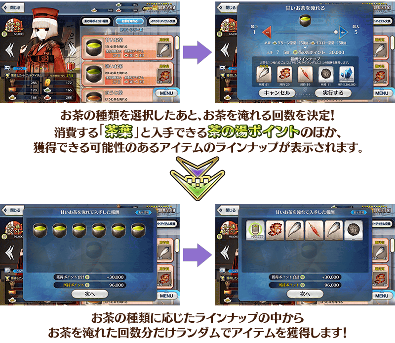
關於「期待高」的顯示
關於能在泡茶時獲得的道具之中可獲得的可能性最高的道具，會在決定泡茶次數畫面的道具上方顯示「期待高」。
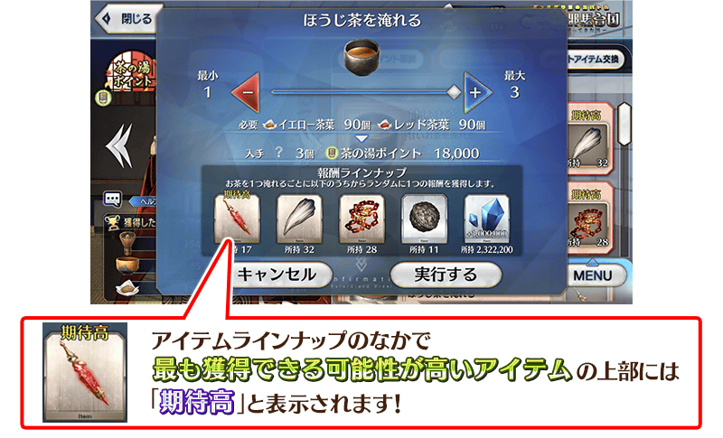
可在泡茶時有獲得可能性的道具陣容
介紹可在泡茶時有獲得可能性的道具陣容！
茶的配方會隨推進的活動故事增加。
◆施行期間◆
2022年9月14日(三) 19:00～10月12日(三) 11:59
※活動道具交換期間結束後「茶葉」會消失。
◆能靠「泡茶」入手的道具◆
| 茶的種類 | 想泡茶 必須的茶葉 |
在泡茶時 有獲得可能性的道具 |
|
|---|---|---|---|
| 配方1 ※通過主線關卡第一服後開放 |
綠色茶葉
30個
黃色茶葉
30個 |
龍之牙【期待高】 愚者之鎖 魔術髓液 世界樹之種 QP |
|
| 配方2 ※通過主線關卡第一服後開放 |
綠色茶葉
30個
紅色茶葉
30個 |
龍之牙 愚者之鎖【期待高】 魔術髓液 世界樹之種 QP |
|
| 配方3 ※通過主線關卡第一服後開放 |
黃色茶葉
30個
紅色茶葉
30個 |
龍之牙 愚者之鎖 魔術髓液【期待高】 世界樹之種 QP |
|
| 配方4 ※通過主線關卡第二服後開放 |
綠色茶葉
20個
黃色茶葉
20個
紅色茶葉
20個 |
龍之牙 愚者之鎖 魔術髓液 世界樹之種【期待高】 QP |
|
| 配方5 ※通過主線關卡第五服後開放 |
黃色茶葉
45個
紅色茶葉
30個 |
鬼魂提燈 鳳凰羽毛 大騎士勳章 枯淡勾玉【期待高】 睿智的猛火ALL★4(SR) |
|
| 配方6 ※通過主線關卡第六服後開放 |
綠色茶葉
45個
黃色茶葉
30個 |
鬼魂提燈 鳳凰羽毛 大騎士勳章【期待高】 枯淡勾玉 睿智的猛火ALL★4(SR) |
|
| 配方7 ※通過主線關卡第八服後開放 |
綠色茶葉
30個
紅色茶葉
45個 |
鬼魂提燈【期待高】 鳳凰羽毛 大騎士勳章 枯淡勾玉 睿智的猛火ALL★4(SR) |
|
| 配方8 ※通過主線關卡余談後開放 |
綠色茶葉
25個
黃色茶葉
25個
紅色茶葉
25個 |
鬼魂提燈 鳳凰羽毛【期待高】 大騎士勳章 枯淡勾玉 睿智的猛火ALL★4(SR) |
|
| 配方9 ※9/21(三) 17:00以後通過特定的關卡後開放 |
綠色茶葉
25個
黃色茶葉
40個
紅色茶葉
25個 |
蠻神心臟 黑獸脂 鬼炎鬼燈【期待高】 睿智的猛火ALL★4(SR) QP |
|
| 配方10 ※9/21(三) 17:00以後通過特定的關卡後開放 |
綠色茶葉
40個
黃色茶葉
25個
紅色茶葉
25個 |
蠻神心臟 黑獸脂【期待高】 鬼炎鬼燈 睿智的猛火ALL★4(SR) QP |
|
| 配方11 ※9/21(三) 17:00以後通過特定的關卡後開放 |
綠色茶葉
25個
黃色茶葉
25個
紅色茶葉
40個 |
蠻神心臟【期待高】 黑獸脂 鬼炎鬼燈 睿智的猛火ALL★4(SR) QP |
|
【9月21日(三) 17:00追記】
以通過期間限定活動「一面倒的茶道戰鬥 嘮嘮叨叨新邪馬臺國 從地獄歸來的男人」所有追加關卡的御主做為對象，開放高難易度的「挑戰關卡」。
「挑戰關卡」就算通過後也不會消失，可以變更從者和概念禮裝的組合等後無限次挑戰。
※關卡通過報酬、戰利品、御主EXP、魔術禮裝EXP、絆點數只可在初次通過時獲得。
◆挑戰關卡開放時間◆
2022年9月21日(三) 17:00～
◆挑戰關卡參加條件◆
滿足以下條件的御主才能參加
・通過期間限定活動「一面倒的茶道戰鬥 嘮嘮叨叨新邪馬臺國 從地獄歸來的男人」的所有追加關卡
◆挑戰關卡初次通過報酬◆
傳承結晶 1個

◆靈基再臨◆
使用能靠活動道具交換入手的「宵闇的勾玉」，重複4次靈基再臨的話，卡面會有所變化！
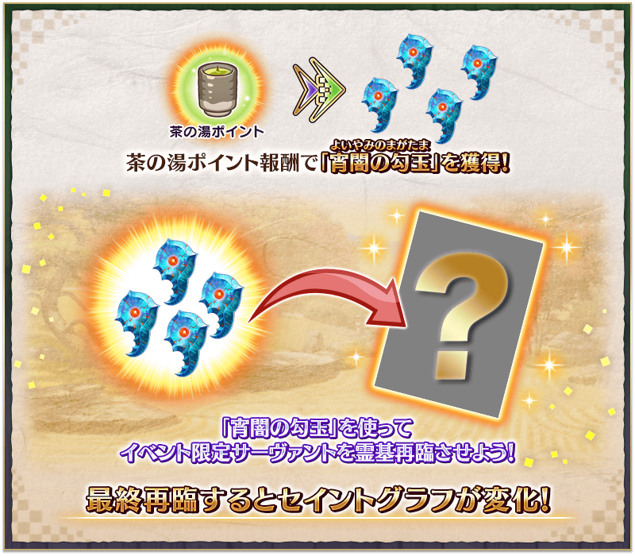
※「★4(SR)壹與」不會隨靈基再臨使戰鬥角色的外觀變化。
◆關於「★4(SR)壹與」的從者硬幣◆
「★4(SR)壹與」的從者硬幣，在本活動中可在活動道具交換入手。
活動道具交換:最多480枚
介紹活動限定從者的寶具演出！
介紹「★4(SR)壹與」的寶具演出！
※「★4(SR)壹與」寶具演出時的BGM在通過期間限定活動「一面倒的茶道戰鬥 嘮嘮叨叨新邪馬臺國 從地獄歸來的男人」2022年9月21日(三) 17:00開放的主線關卡閒話後會變化。
超值攻略方法・其1
本活動的期間中，強化活動限定從者「★4(SR)壹與」時的獲得經驗值變成2倍。
是讓成為活動加成對象的「★4(SR)壹與」等級一口氣上升的機會！
◆舉辦期間◆
2022年9月14日(三) 19:00～10月5日(三) 11:59
超值攻略方法・其2
本活動的期間中，下表的從者在活動關卡中，會得到「自身的攻擊威力提升」與「絆點數獲得量提升」的加成！
強化對象從者，挑戰活動吧！
※活動加成的效果量因從者而異。 ※瑪修・基利艾拉特的「絆點數獲得量提升」效果，是所謂「我方全體含候補的絆點數獲得量提升」的效果。支援時此效果無效。
【活動加成的效果與對象從者】
| 自身的 攻擊威力 |
絆點數 獲得量 |
職階 | 稀有度 | 從者名 |
|---|---|---|---|---|
| ＋100% | 只限自身 ＋50% |
Saber | ★★★★ | 山南敬助 |
| Berserker | ★★★★★ | 千利休 | ||
| Ruler | ★★★★ | 壹與 | ||
| ＋50% | 只限自身 ＋20% |
Saber | ★★★★★ | 沖田總司 |
| ★★★★ | 齋藤一 | |||
| Berserker | ★★★★ | 茶茶 | ||
| ★★★ | 森長可 | |||
| Ruler | ★★★★★ | 卑彌呼 | ||
| Avenger | ★★★★★ | 魔王信長(織田信長) | ||
| Alterego | ★★★★★ | 沖田總司〔Alter〕 | ||
| ＋30% | 只限自身 ＋20% |
Saber | ★★★★★ | 沖田總司〔Alter〕 |
| Archer | ★★★★ | 織田信長 | ||
| ★ | 織田信勝 | |||
| Lancer | ★★★★★ | 坂本龍馬 | ||
| ★★★★ | 長尾景虎 | |||
| Rider | ★★★★ | 坂本龍馬 | ||
| ★★★ | 美杜莎 | |||
| Caster | ★★★★★ | 出雲阿國 | ||
| Assassin | ★★★★★ | 謎之女主角X | ||
| ★★★★★ | 李書文 | |||
| ★★★★ | 沖田・J・總司 | |||
| ★★★ | 岡田以藏 | |||
| Berserker | ★★★★★ | 土方歲三 | ||
| ★★★★ | 織田信長 | |||
| Avenger | ★★★★ | 謎之蘭丸X | ||
| 我方全體 ＋5% |
Shielder | ★★★ | 瑪修・基利艾拉特 |
※就算成為對象從者也會有未在本活動的主線劇本登場的情況。 ※自9月9日(五) 21:00，在從者選擇畫面和從者強化畫面等，追加活動加成篩選器。由於是只顯示於活動活躍從者的便利功能，敬請活用。 ※「★5(SSR)魔王信長(織田信長)」是「★5(SSR)織田信長」靈基再臨到第3階段後名稱變成「★5(SSR)魔王信長」。
超值攻略方法・其3
裝備活動限定概念禮裝與期間限定概念禮裝的話，在活動中會受到各式各樣的恩惠。
裝備可靠活動道具交換與茶道點數報酬入手的活動限定概念禮裝「★5(SSR)旅をもてなす」的話，在期間限定活動「一面倒的茶道戰鬥 嘮嘮叨叨新邪馬臺國 從地獄歸來的男人」中「綠色茶葉」「黃色茶葉」「紅色茶葉」的掉落獲得數會提升！
並且，裝備在聖晶石召喚Pick Up的期間限定概念禮裝「★5(SSR)黄泉より出づる讐い」「★4(SR)是にあらざる」「★3(R)土の実」的話，活動道具「赤樂茶碗」「天正大判」「荒穗茶筅」各自的掉落獲得數會提升。
※請注意各關卡的道具掉落率並非100％。
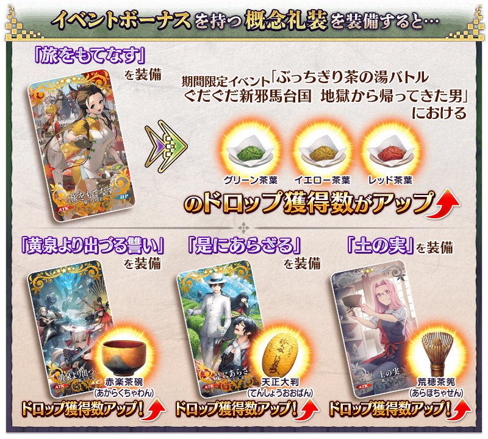
| 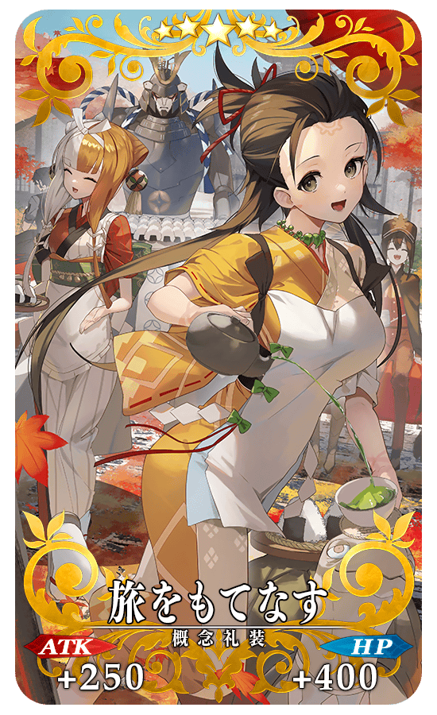 |
★★★★★SSR
◆最大解放時效果◆
|
得到活動限定概念禮裝EXP卡「茶の湯ティーチャー」「二代目は壱与！」吧！
做為期間限定活動「一面倒的茶道戰鬥 嘮嘮叨叨新邪馬臺國 從地獄歸來的男人」的活動限定的報酬，可入手大幅強化概念禮裝的EXP卡！
| 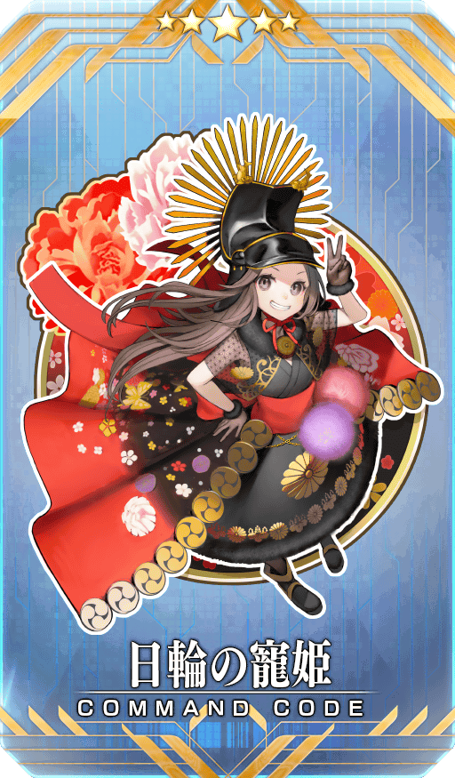 |
【活動限定】 |
| 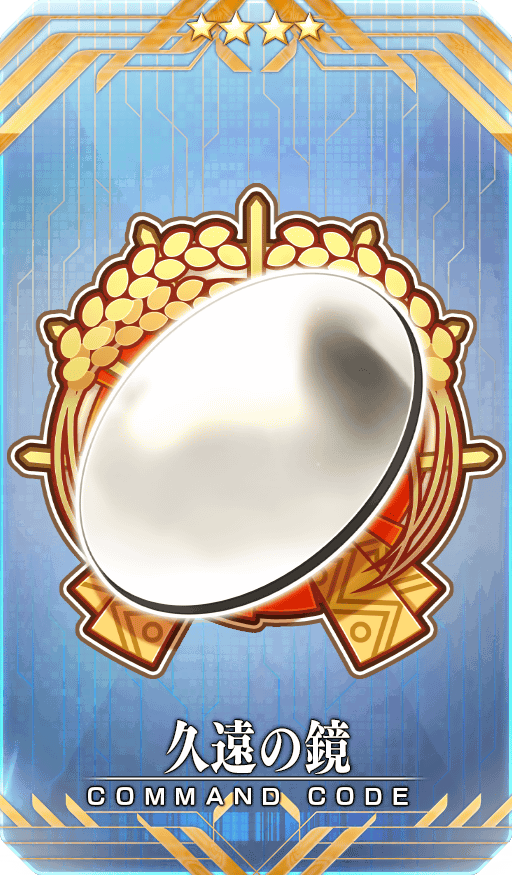 |
★★★★SR |
|
★★★R |

活動道具可自點擊管理室(ターミナル)畫面右上「活動報酬」鍵所顯示的「活動道具交換」畫面，交換以下的道具。
※簡易靈衣「思い出の休日スタイル」開放權、傳承結晶、英靈結晶・流星之芙芙ALL★4(HP)、英靈結晶・日輪之芙芙ALL★4(ATK)在通過本活動的主線關卡閒話後才能交換。 ※「★4(SR)壹與」的寶具強化専用靈基在通過特定主線關卡後才能交換。 ※「★4(SR)壹與」的從者硬幣在「★4(SR)壹與」正式加入後才能交換。 ※活動道具交換期間結束後「赤樂茶碗」「天正大判」「荒穗茶筅」會消失。
◆交換期間◆
2022年9月14日(三) 19:00～10月12日(三) 11:59
◆能用交換赤樂茶碗的道具◆
|
【活動限定概念禮裝】 【靈衣開放權】 【寶具強化専用靈基】 【從者硬幣】 【技能強化＆靈基再臨素材】 【靈基再臨素材】 【其他道具】 |
◆能用天正大判交換的道具◆
|
【活動限定概念禮裝】 【從者硬幣】 【技能強化＆靈基再臨素材】 【靈基再臨素材】 【其他道具】 |
◆能用荒穗茶筅交換的道具◆
|
【活動限定概念禮裝】 【從者硬幣】 【技能強化＆靈基再臨素材】 【其他道具】 |
「★4(SR)壹與」的簡易靈衣「思い出の休日スタイル」的開放權做為期間限定活動「一面倒的茶道戰鬥 嘮嘮叨叨新邪馬臺國 從地獄歸來的男人」的報酬登場！
本活動中，在通過特定主線關卡後可於活動道具交換入手上述靈衣開放權。
另外，想開放靈衣的話，除了靈衣開放權外再加上必須滿足一些開放條件。
◆有關靈衣開放權的注意◆
※「★4(SR)壹與」的靈衣開放權只限期間限定活動「一面倒的茶道戰鬥 嘮嘮叨叨新邪馬臺國 從地獄歸來的男人」的活動道具交換期間才能入手。
※「★4(SR)壹與」的簡易靈衣會隨著外觀變化一部份語音
※請注意未持有「★4(SR)壹與」的情況，可入手靈衣開放權。但無法進行靈衣開放。
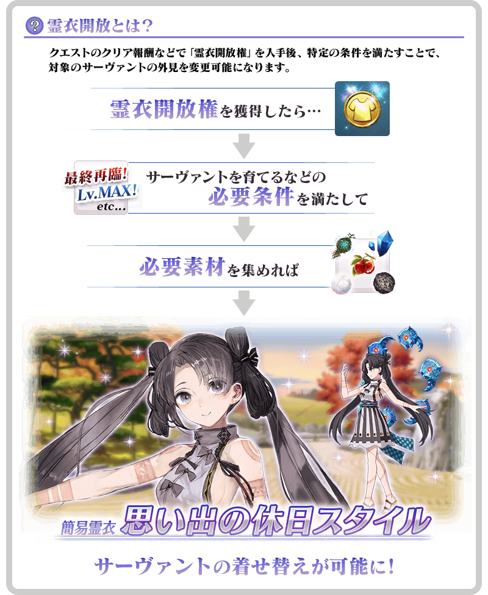

「靈衣開放」是自強化畫面進行。
※「靈衣開放」後會自動切換戰鬥角色和外觀圖片。若想回到「靈衣開放」前的狀態和變成其他再臨階段的情況，可自從者詳細畫面變更。
介紹壹與的簡易靈衣開放後寶具演出！
介紹開放簡易靈衣「思い出の休日スタイル」的「★4(SR)壹與」寶具演出！
※「★4(SR)壹與」寶具演出時的BGM在通過期間限定活動「一面倒的茶道戰鬥 嘮嘮叨叨新邪馬臺國 從地獄歸來的男人」2022年9月21日(三) 17:00開放的主線關卡閒話後會變化。
【9月21日(三) 17:00追記】
「★5(SSR)沖田總司〔Alter〕(Alterego)」的簡易靈衣「煉獄Alter」開放權做為期間限定活動「一面倒的茶道戰鬥 嘮嘮叨叨新邪馬臺國 從地獄歸來的男人」的報酬登場！
本活動中可入手上述靈衣開放權做為特定活動關卡的報酬。
另外，想開放靈衣的話，除了靈衣開放權外再加上必須滿足一些開放條件。
◆有關靈衣開放權的注意◆
※「★5(SSR)沖田總司〔Alter〕(Alterego)」的靈衣開放權只限期間限定活動「一面倒的茶道戰鬥 嘮嘮叨叨新邪馬臺國 從地獄歸來的男人」的活動舉辦期間才能入手。
※「★5(SSR)沖田總司〔Alter〕(Alterego)」的簡易靈衣會變化從者名及外觀與語音。
※請注意未持有「★5(SSR)沖田總司〔Alter〕(Alterego)」的情況，可入手靈衣開放權。但無法進行靈衣開放
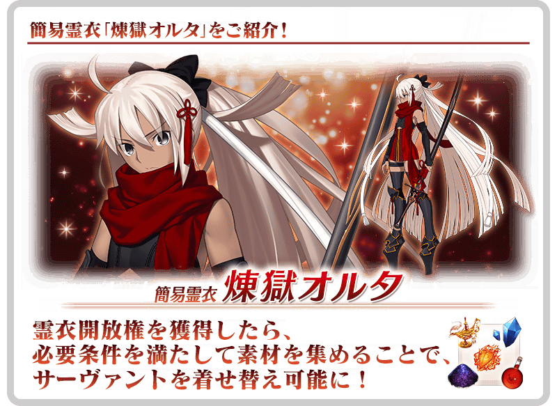
介紹沖田總司〔Alter〕(Alterego)的簡易靈衣開放後寶具演出！
介紹開放簡易靈衣「煉獄Alter」的「★5(SSR)沖田總司〔Alter〕(Alterego)」寶具演出！
【9月17日(六) 17:00追記】
可在達文西工房的「靈衣縫製」交換的「★5(SSR)沖田總司(Saber)」的簡易靈衣「淺蔥色羽織袴」開放權，通過「終局特異點」後變得可免費交換！
◆靈衣開放權交換免費化的時間◆
2022年9月17日(六) 17:00～
※簡易靈衣「淺蔥色羽織袴」開放權的交換免費化沒有期限。
◆靈衣開放權交換免費化的條件◆
滿足以下條件的御主才能免費交換
・通過「終局特異點」
※關於已經取得交換對象靈衣開放權的玩家，無法交換。 ※有用稀有稜鏡2個交換簡易靈衣「淺蔥色羽織袴」開放權，並已經有達成靈衣開放權交換免費化的條件情況，會返還交換使用的稀有稜鏡2個到禮物箱。 ※用稀有稜鏡2個交換簡易靈衣「淺蔥色羽織袴」開放權後達成免費化條件的情況，也會返還交換使用的稀有稜鏡2個到禮物箱。
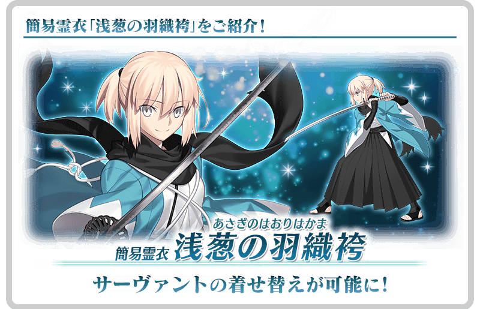
【9月17日(六) 17:00追記】
將「★5(SSR)沖田總司〔Alter〕(Alterego)」與「★3(R)森長可」當對象各自強化的特別關卡「從者強化關卡」，在迦勒底之門永久追加。
不僅進行對象從者的強化，也可獲得聖晶石做為關卡通過報酬。
※請注意在從者強化關卡沒有文字冒險部份。
◆追加時間◆
2022年9月17日(六) 17:00～
◆追加時間◆
持有的強化對象從者，必須使其最終再臨。
※未持有對象從者的話，不會出現關卡。
※關卡沒有舉辦期限。
在期間限定活動「一面倒的茶道戰鬥 嘮嘮叨叨新邪馬臺國 從地獄歸來的男人」的特設頁面，智慧型手機用桌面的贈送實施中！
在社群媒體分享特設頁面就能下載，請務必使用。
◆配發期間◆
2022年9月14日(三) 19:00～10月5日(三) 11:59
◆特設頁面◆
https://www.fate-go.jp/special/2022-gudaguda/
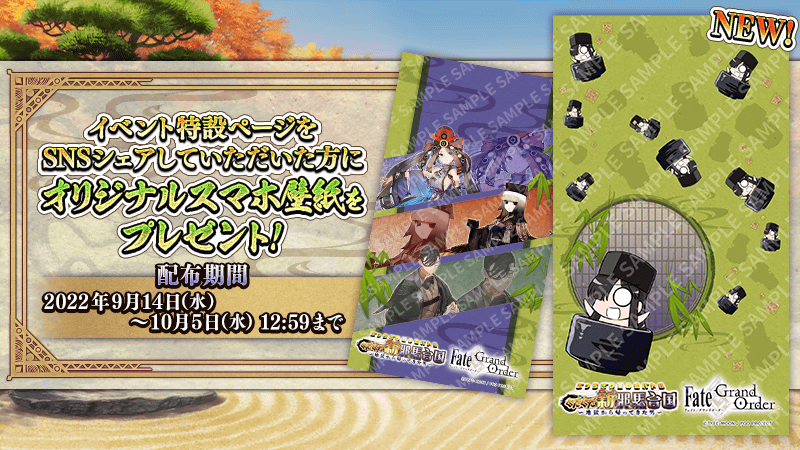 ※9月21日(三) 17:00圖片更新
【9月17日(六) 17:00追記】
其他還有，
・嘮嘮叨叨新邪馬臺國 千利休Pick Up召喚
・京漫展2022出展記念嘮嘮叨叨Pick Up召喚
以期間限定舉辦中！
關於詳情，請自下述橫幅確認。
■「嘮嘮叨叨新邪馬臺國 千利休Pick Up召喚」詳細情報

■「京漫展2022出展記念嘮嘮叨叨Pick Up召喚」詳細情報